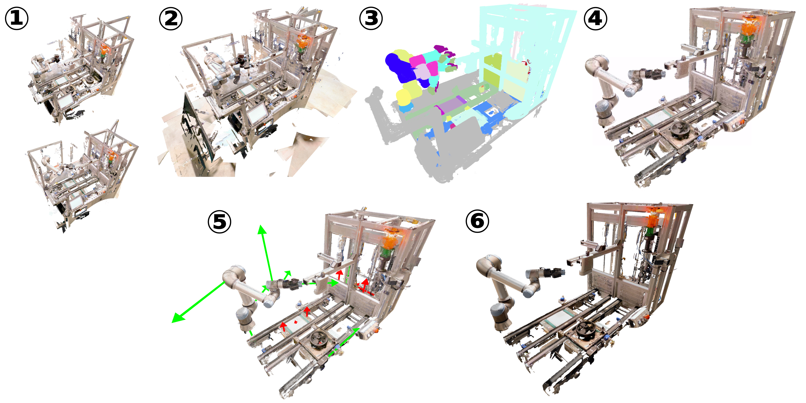
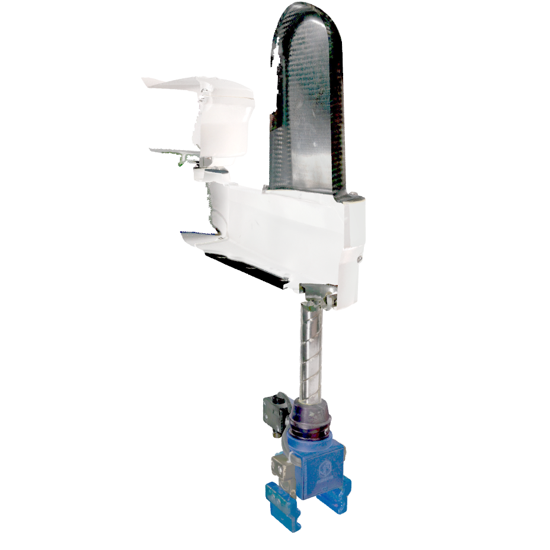
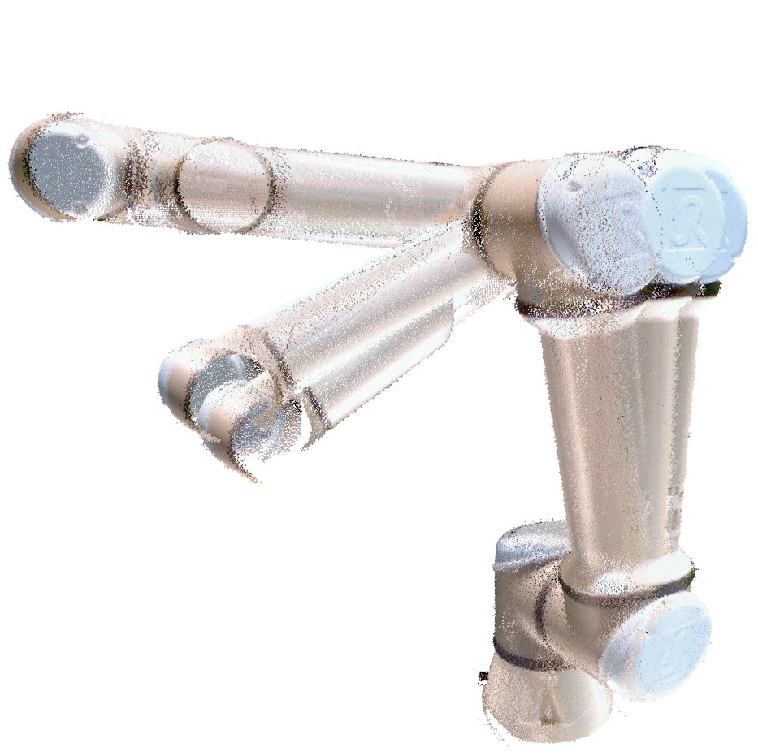
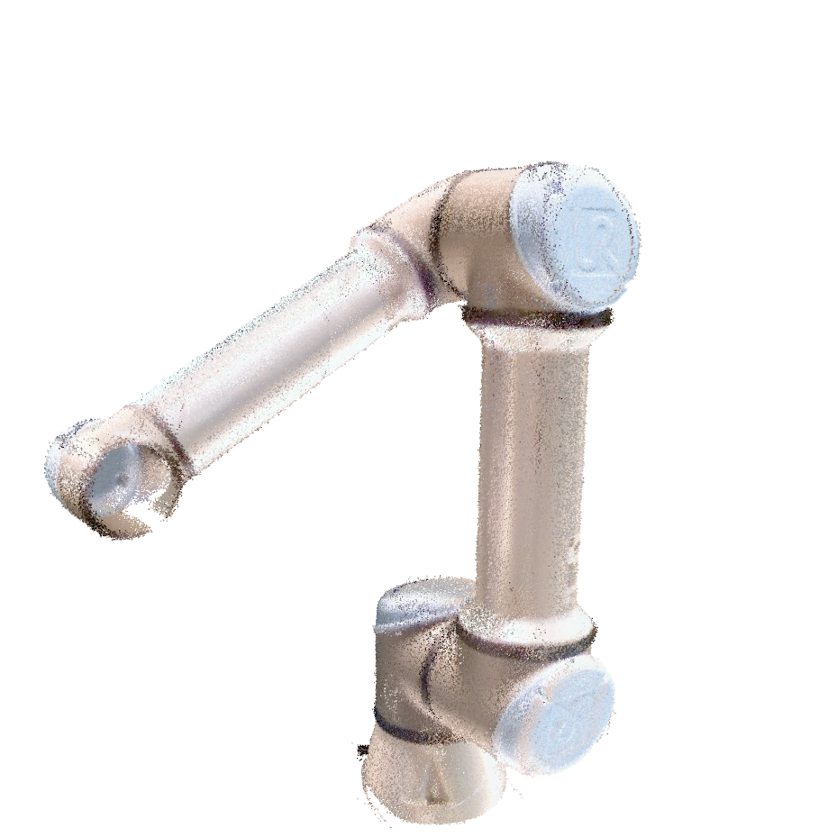

Overview
Virtual commissioning can cut planning effort, commissioning time, and project cost — but only with a digital twin that reflects the plant's real as-built state. Roughly 80% of plants are brownfield, where models are outdated or missing.
3D scanning captures geometry in minutes, yet a point cloud carries no object boundaries, part identities, or kinematics. We present an interactive workflow that turns multiple static scans into an articulated digital twin, applying human judgement where ambiguity is high and automating the geometric reasoning that is reliable.
The workflow
Multiple scans capturing different kinematic states are combined into one model encoding part geometry, joint axes, and hierarchy. Each stage is verifiable.

- 01Preprocess. Statistical denoising and interactive cropping of irrelevant scan regions.
- 02Register. Align scans into one frame via Kabsch and ICP from point correspondences.
- 03Segment. Selection primitives and set operations isolate individual moving parts.
- 04Match. Bottom-up alignment of parts across states, completing occluded geometry.
- 05Estimate axes. Recover revolute and prismatic axes, centers, and joint ranges.
- 06Reconstruct & export. Screened Poisson meshing, then export to URDF / OpenUSD.
Completing occluded geometry
Because moving parts are aligned across the states in which they were captured, regions hidden in one scan are filled in from another — yielding more complete part models than any single observation.



Matching across a kinematic chain
To match parts within a kinematic chain, its parent-child hierarchy is replicated in the editor. Alignment proceeds bottom-up: the lowest-level geometry is aligned first, and each alignment rigidly pre-transforms its child parts before they are aligned in turn.



Bottom-up part matching for kinematic hierarchies.
A simulation-ready twin
Segmented part meshes are connected in a hierarchical kinematic tree encoding joint axes and limits. This maps directly onto URDF and OpenUSD and imports into commissioning software as the geometric and kinematic basis for a digital twin.

BibTeX
@inproceedings{redacted2026pointclouds,
title = {From Point Clouds to Articulated Digital Twins:
An Interactive Workflow for Brownfield Production Plants},
author = {Redacted for Peer Review},
booktitle = {Redacted for Peer Review},
year = {2026}
}